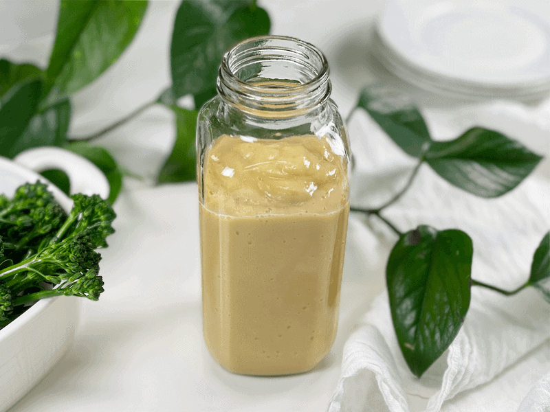

Amie Sue’s Vegan Groovy Cheese Sauce | Cooked | Sweet Potato Based | Oil-Free

Creamy, cheesy, full of flavor, with a slight twinge of sweetness… those are the adjectives that come to mind whenever I lick the bowl clean. Outside of the delicious taste, I love that this cheese is plant-based (sweet potato), customizable, low-fat, oil-free, and freezable!

Enjoy it poured over steamed broccoli (or any veggie), stir into rice or quinoa, use it to top baked potatoes or tater tots, or enjoy it as a chip dip. I have complete faith that you will find many ways to enjoy this sauce.
I have been making this recipe for years, serving it at every birthday, holiday, music jam, or event. Why? Because it was always a hit, and when you find a hit, you stick with it. Even my Aunt Kathy, who eats a Standard American Diet, requested that I make this for their anniversary party. When she asks for a recipe or requests for a particular dish to be served, I jump at the opportunity! So let’s discuss some of the main ingredients that I used in this recipe.
Ingredient Run-Down
White Sweet Potato
- Sweet potatoes come in many different colors. The skin can be white, yellow, red, purple, or brown, and the flesh can be white, yellow, orange, or purple. We want to use the appropriate one, not only for the flavor but more so the coloring. Not too sure how appealing a purple cheese sauce would be. But then, hey, it might be a ghoulish dish to present at a Halloween party?!
- I chose the white sweet potato because it is the least sweet option, which is what we want for this recipe.
Oat Milk
- Oat milk is neutral in flavor with a slight sweetness. It is low in fat and simple to make at home.
- The role of oat milk is to create a creamy texture without imparting too much flavor. Think of it as the supporting cast to the main star of the sauce, which is the almighty sweet potato.
- Over the years, my go-to milk was coconut milk, which is higher in fat. If you don’t want to use oat milk, you can easily substitute it for another plant-based milk. The key is to use milk that has a thicker consistency. For those who make their own plant-based milks, simply reduce the amount of water to create creamier milk.
Nutritional Yeast
- If you’ve never heard of nutritional yeast, it’s often used in vegan cooking because of its addictively cheesy taste. To be clear, nutritional yeast does not taste exactly like cheese, but it just has that same umami flavor that leaves people addicted to dairy cheese.
- I don’t recommend omitting… not if you are seeking a cheesy vegan sauce. Unfortunately, there isn’t a good substitute for it.
I hope you enjoy this creamy but straightforward, fat-free, vegan cheese sauce, made without any nuts, tofu, oils, seeds, or dairy.
Ingredients
yields 2 cups
-
1 cup packed cooked & cooled white sweet potato
-
1/2 cup oat milk or coconut milk
-
1/2 cup vegetable broth
-
3 Tbsp nutritional yeast
-
1 tsp apple cider vinegar
-
1 tsp sea salt
-
1/4 tsp garlic powder
-
1/4 tsp onion powder
Preparation
- Either steam or bake the sweet potato, allow it to cool, and remove the skin (should peel off easily after cooked).
- If you own a high-speed blender such as a Vitamix, you can leave the skins on for added nutrients, just blend it long enough for the skins to get broken down.
- In the blender, combine the cooked sweet potato, oat milk, vegetable broth, nutritional yeast, apple cider vinegar, salt, garlic, and onion powder. Blend until creamy.
- If you plan on serving this right away, keep blending it on high until the blender carafe is warm to the touch.
- Store leftovers in the fridge for 3-5 days or freeze for up to 3 months.
-
To warm — Pour the sauce into a small saucepan and heat gently until warmed through before serving as a dip, on top of taco salads, as a baked potato topper or more!
© AmieSue.com